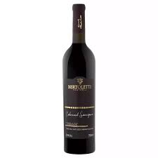
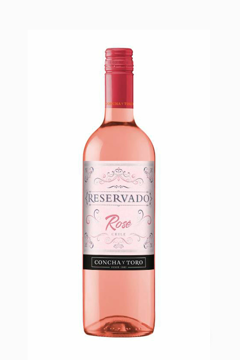
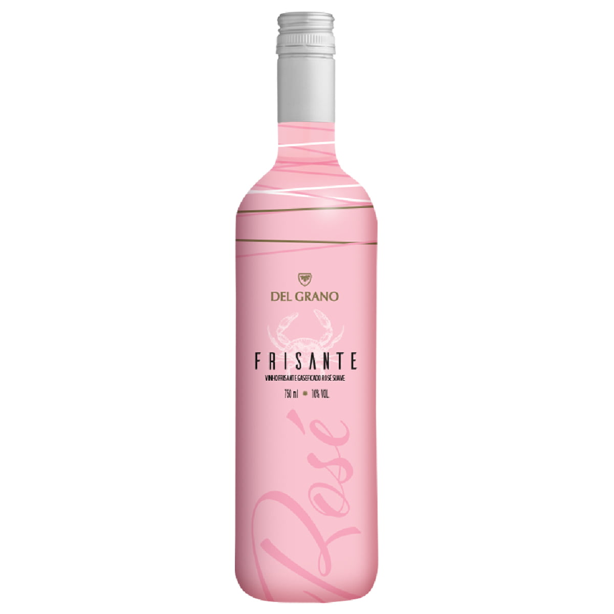

Vinho Tinto Reserva - Vinho encorpado com aromas de frutas vermelhas e especiarias. 199,00

Vinho Rosé - Vinho fresco e aromático com notas de frutas cítricas. 199,00 Vinho Tinto Noir - Vinho leve e refrescante com notas de frutas vermelhas e flores. 199,00

Vinho frisante - Vinho frisante com aromas de frutas cítricas e pão tostado. 199,00